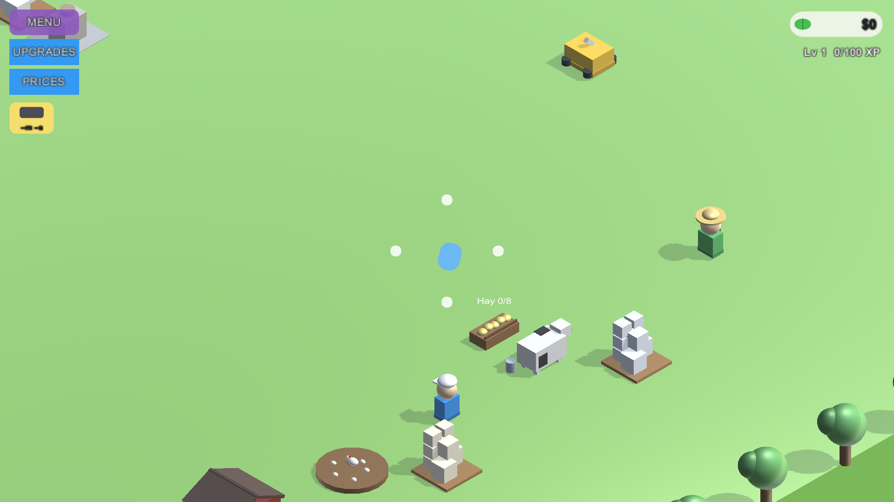

Ref 1 — 9.55.33 farm side

Game — LIVE Unity capture (Batch 26, real render)

Verdict
Feature match: farmer w/ straw hat (
CharacterRole.Farmer) and green tunic visible top-right, cow + hay trough + red barn roof, hen coop dirt patch bottom-left, player w/ white ballcap, MENU/UPGRADES/PRICES stack + phone-order timer chip (batch 23) all rendering live.